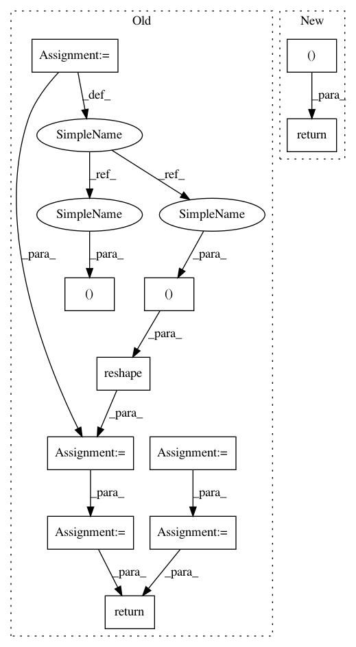

120b9f6d5bb7c0c7dde5fb60cdb503dddaeb03a0,geomstats/geometry/special_euclidean.py,_SpecialEuclideanVectors,matrix_from_vector,#_SpecialEuclideanVectors#Any#,305
Before Change
Matrix.
vec = self.regularize(vec)
n_vecs, _ = vec.shape
rot_vec = vec[:, :self.rotations.dim]
trans_vec = vec[:, self.rotations.dim:]
rot_mat = self.rotations.matrix_from_rotation_vector(rot_vec)
trans_vec = gs.reshape(trans_vec, (n_vecs, self.n, 1))
mat = gs.concatenate((rot_mat, trans_vec), axis=2)
last_lines = gs.array(gs.get_mask_i_float(self.n, self.n + 1))
last_lines = gs.to_ndarray(last_lines, to_ndim=2)
last_lines = gs.to_ndarray(last_lines, to_ndim=3)
mat = gs.concatenate((mat, last_lines), axis=1)
return mat
@geomstats.vectorization.decorator(
["else", "vector", "vector"])
def compose(self, point_a, point_b):
After Change
vec = self.regularize(vec)
output_shape = (
(vec.shape[0], self.n + 1, self.n + 1) if vec.ndim == 2
else (self.n + 1, ) * 2)
rot_vec = vec[..., :self.rotations.dim]
trans_vec = vec[..., self.rotations.dim:]
rot_mat = self.rotations.matrix_from_rotation_vector(rot_vec)
return embed(rot_mat, trans_vec, output_shape)
@geomstats.vectorization.decorator(
["else", "vector", "vector"])
def compose(self, point_a, point_b):
In pattern: SUPERPATTERN
Frequency: 3
Non-data size: 11
Instances
Project Name: geomstats/geomstats
Commit Name: 120b9f6d5bb7c0c7dde5fb60cdb503dddaeb03a0
Time: 2020-11-16
Author: nicolas.guigui@inria.fr
File Name: geomstats/geometry/special_euclidean.py
Class Name: _SpecialEuclideanVectors
Method Name: matrix_from_vector
Project Name: deepchem/deepchem
Commit Name: 64099a1d2d671705cd9d4a18f9413f4c3569bc86
Time: 2019-04-19
Author: peastman@stanford.edu
File Name: deepchem/models/tensorgraph/layers.py
Class Name: NeighborList
Method Name: get_neighbor_cells
Project Name: tensorly/tensorly
Commit Name: 3dba9054b3c7bf4b9edabb430eb457a07e05b6ca
Time: 2018-07-05
Author: jean.kossaifi@gmail.com
File Name: tensorly/mps_tensor.py
Class Name:
Method Name: mps_to_tensor
Project Name: geomstats/geomstats
Commit Name: 120b9f6d5bb7c0c7dde5fb60cdb503dddaeb03a0
Time: 2020-11-16
Author: nicolas.guigui@inria.fr
File Name: geomstats/geometry/special_euclidean.py
Class Name: _SpecialEuclideanVectors
Method Name: matrix_from_vector